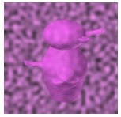

<!DOCTYPE html>
<html>

<head>
    <title>3AFC Matching</title>
    <script src="./jspsych/jspsych.js"></script>
    <link href="./jspsych/jspsych.css" rel="stylesheet" type="text/css" />
    <script src="./jspsych/plugin-preload.js"></script>
    <script src="./jspsych/plugin-html-button-response.js"></script>
    <script src="./jspsych/plugin-html-keyboard-response.js"></script>
    <script src="./jspsych/plugin-image-keyboard-response.js"></script>
    <script src="./trials.js"></script>
</head>

<body></body>
<script>
    const ITI = 750

    let knockedOut = false
    var jsPsych = initJsPsych({
        default_iti: ITI,
        on_finish: function () {
            let timestamp = new Date().toISOString()
            jsPsych.data.get().localSave('csv', `${sbjID}_3AFCMatching_${timestamp}.csv`)
        }
    });

    // Timeline
    var timeline = []


    let images = [
        `./stimuli/ex1.jpg`,
        `./stimuli/ex2.jpg`,
        `./stimuli/noiseEx.jpg`,
        './stimuli/attentionChoice.jpg',
        './stimuli/attentionTarget.jpg',
    ]
    for (trial of trials) {
        images.push(`./stimuli/trial${trial.Trial}-1.jpg`)
        images.push(`./stimuli/trial${trial.Trial}-2.jpg`)
        images.push(`./stimuli/trial${trial.Trial}-3.jpg`)
    }
    // Preload
    timeline.push({
        type: jsPsychPreload,
        auto_preload: true,
        images: images
    })

    // Instructions
    timeline.push({
        type: jsPsychHtmlButtonResponse,
        stimulus: `
            <p>This is a task measuring your ability to match images of novel objects.</p>
            <p>On each trial you will see <b>a target</b> briefly, followed by three options.</p>
            <p>Choose which of the 3 options matches the target object.</p>
        `,
        choices: ['Click for instructions']
    })

    timeline.push({
        type: jsPsychHtmlButtonResponse,
        stimulus: '',
        choices: ['./stimuli/ex1.jpg'],
        button_html: '<input type="image" src="%choice%"/>',
    })

    timeline.push({
        type: jsPsychHtmlButtonResponse,
        stimulus: '',
        choices: ['./stimuli/ex2.jpg'],
        button_html: '<input type="image" src="%choice%"/>',
    })

    timeline.push({
        type: jsPsychHtmlButtonResponse,
        stimulus: `
            <p>The first few trials will give you feedback on whether you got it right or not.</p>
        `,
        choices: ['Click to start this part']
    })

    // Build mask slide
    const mask = {
        type: jsPsychImageKeyboardResponse,
        stimulus: `./stimuli/mask.jpg`,
        trial_duration: 500,
        choices: ['NO_KEYS'],
        post_trial_gap: 0
    }
    // Build fixation
    const fix = {
        type: jsPsychImageKeyboardResponse,
        stimulus: `./stimuli/fix.jpg`,
        trial_duration: 500,
        choices: ['NO_KEYS'],
        post_trial_gap: 0
    }

    for (let trial of trials) {
        if (trial.Trial == 4) { // Instruction
            timeline.push({
                type: jsPsychHtmlButtonResponse,
                stimulus: `
                    <p>Now you won't receive feedback anymore.</p>
                    <p>The target may be shown more briefly.</p>
                    <p>But the task is always to find the choice that best matches the target.</p>
                `,
                choices: ['Click to continue']
            })
        } else if (trial.Trial == 28) { // Noise instructions
            timeline.push({
                type: jsPsychHtmlButtonResponse,
                stimulus: `
                    <p>For the last trials, the target will be shown behind distracting noise, like this:</p>
                    
                    <p>This may be difficult, just keep trying your best!</p>
                `,
                choices: ['Click to continue']
            })
        } 

        // Fixation
        timeline.push(fix)

        // Target
        timeline.push({
            type: jsPsychImageKeyboardResponse,
            stimulus: `./stimuli/trial${trial.Trial}-target.jpg`,
            trial_duration: trial.Duration,
            choices: ['NO_KEYS'],
            post_trial_gap: 0
        })

        // Mask
        timeline.push(mask)

        // Choices
        timeline.push({
            type: jsPsychHtmlButtonResponse,
            stimulus: '',
            choices: [1, 2, 3].map(x => `trial${trial.Trial}-${x}.jpg`),
            button_html: '<input type="image" src="./stimuli/%choice%"/>',
            data: {
                TrialN: trial.Trial,
                CorrRes: trial.CorrRes - 1,
                TestTrial: true
            },
            on_finish: function (data) {
                data.Correct = data.CorrRes == data.response
            },
            post_trial_gap: 0
        })

        // Feedback
        if (trial.Feedback) {
            timeline.push({
                type: jsPsychHtmlKeyboardResponse,
                stimulus: function () {
                    if (jsPsych.data.get().last(1).values()[0].Correct) {
                        return "<h3>Correct!</h3>"
                    } else {
                        return "<h3>Incorrect.</h3>"
                    }
                },
                choices: ['NO_KEYS'],
                trial_duration: 1000
            })
        }
    }

    // Calculate score
    timeline.push({
        type: jsPsychHtmlKeyboardResponse,
        stimulus: function () {
            let data = jsPsych.data.get().filter({ TestTrial: true })
            let score = data.select('Correct').mean() * 100
            return `
                <p>You have completed this test, good job!</p>
                <p>Your score is ${score.toFixed(0)}%.</p>
            `
        },
    })

    // End card
    timeline.push({
        type: jsPsychHtmlButtonResponse,
        stimulus: `
            <p>You have completed this test, good job!</p>
        `,
    })

    // Run
    jsPsych.run(timeline);
</script>

</html>